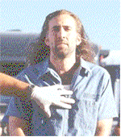
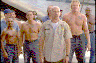
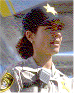
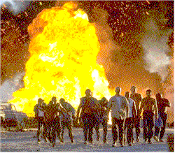
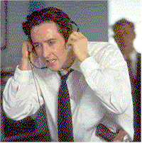

|
||
| Movie Credits | Buy It! |
Con Air
Review by Eddie Cockrell
Posted 6 June 1997
Directed by Simon West Starring Nicholas Cage, John Cusack, Screenplay by Scott Rosenberg Produced by Jerry Bruckheimer |
"Viva Las Vegas," Nicholas Cage mutters to no one in particular at the onset of the multiple pyrotechnic set-pieces that bring the loud, crude and often very funny new action film Con Air to its inevitable conclusions, and it would be of interest to learn exactly what the desert mecca's Chamber of Commerce must think of the newly-buffed actor after his turns in Honeymoon in Vegas, Leaving Las Vegas and now this big-budget summer jailbird thriller in which he's in the cockpit of a gargantuan C-123K cargo plane which lands in the middle of traffic on the famed strip and slides into the lobby of the Sands Hotel. Producer Jerry Bruckheimer, now working independently following the untimely and unpleasant death of his partner Don Simpson during production of The Rock, could've called this opus Leveling Las Vegas (or even Con Brio); whatever the title, it's a sure bet to wow audiences who appreciate some laughs with their testosterone.
Coming off his sinister turn as the psychotic mobster Little Junior in Barbet Schroeder's downbeat Kiss of Death and the reluctant, Beatle-loving oddball mercenary Stanley Goodspeed in The Rock , Cage completes his transformation to action hero with a Raising Arizona-accented reading of former Army Ranger Cameron Poe, whose stint in the slammer for accidentally killing a guy outside a bar is at an end. On his way home aboard a convict transport plane the focused but temperamental Poe is caught up in a revolt lead by bald criminal mastermind Cyrus "The Virus" Grissom (John Malkovich) and his lieutenant Nathan "Diamond Dog" Jones (Ving Rhames). Looking around at the institutionalized scum under his crazed command, Grissom promptly dubs the flight "Con Air." As the strongest and luckiest survive The Virus' scheme (remember the dreadfully arbitrary deaths in the extraordinary 1965 Jimmy Stewart film The Flight of the Phoenix?), the motley crew is second-guessed from the ground by sandal-and-suit-wearing U.S. Marshal Vince Larkin (John Cusack) — who must also ward off the extreme solutions suggested by bullheaded D.E.A. agent Duncan Malloy (Colm Meaney, a long way from upcoming Irish comedy The Van) and try to get into the head of his reluctant but competent airborne ally.
First-time feature director Simon West, a British-born veteran of television ads — including the award-winning Budweiser ants and Little Caesar pizza series — acquits himself valiantly in the complicated action sequences ("I wouldn't have necessarily picked something of this scope to start with," he confesses). Still, for all the sloppy, mistimed editing of the plane crash and self-conscious camera angles that distract immensely from the exposition, West comes off much better than Michael Bay, whose fragmented filming of The Rock reduced what could have been a fine chase scene on the streets of San Francisco to a disconnected blur and whose reverential treatment of Ed Harris robbed that great actor of a truly sinister turn.
It helps that West has a more loosey-goosey group to work with: Cage and Rhames were both in Kiss of Death and appear to be completely in synch with one another, Malkovich seems overjoyed with the opportunity to chew the rivets off the plane after ponderous overseas stints with Manoel de Oliveira (The Convent), Michelangelo Antonioni (Beyond the Clouds) and Stephen Frears. Cage's few scenes with Steve Buscemi's Hannibal Lecter-inspired killer Garland Greene (a role created, like Cusack's, expressly for the actor) play like some demented summit conference between alumni of the Joel and Ethan Coen School of Affected Acting and are a highlight of the movie's seditious, genre-bending agenda. Cusack is fine in his first bonafide action film as an idealistic, resourceful Fed who seems to have wandered into government service from the Peace Corps but manages to communicate the essential absurdity of the proceedings without appearing snobbish, snide or hipper-than-thou. In what surely must be an in-joke aimed at his slender frame, Cusack gets knocked down a lot, which provides a pleasing counterpoint to the seemingly indestructible pro- and antagonists that are necessary if a film such as this is to play for the full two hours.
Attractive yet sturdy Rachel Ticotin — a terrific actress in perpetual search of the proper, ahem, vehicle — makes the most of her brief but pivotal role of Guard Sally Bishop, the only woman on the plane; young actress Monica Potter is less fortunate playing Cage's pining wife as she is given next to nothing to do. The heavily tattooed supporting cast is atmospheric as all get-out, with the most distinctive impressions registered by convict-turned-actor Danny Trejo as Johnny 23 (don't ask), who says that acting is "like the rush when you do armed robbery" — three cheers for verisimilitude — and M.C. Gainey as Swamp Thing, the easygoing bewhiskered good-old-boy lifer who may or may not be able to fly the plane. The only misstep is Sally Can't Dance, a diminutive cross-dresser played by a creature called simply (or not-so-simply), Renoly; the character's nature isn't nearly as objectionable as the movie's lack of interest — or time — to properly flesh out such a provocative addition to the passenger list. And what about the old white guy who looks like Sam Fuller (but isn't) in some of the in-flight crowd scenes? Sure, they needed a large group for story contrivances best left unspecified, but if this geezer is the kind of ultra-dangerous con on which this story depends the producers might as well have put Bernard Goetz in an aisle seat.
Interestingly, the world of desperate men in desperate straits has been polished to a fine shine by the producer: just as Gene Hackman and Denzel Washington make nice after trying to kill each in the Crimson Tide and the competitors of Top Gun realize that they're all flying for the same reason, so too guys can bond through strife in the Con Air world, as Larkin and Malloy chat near the fade with the easy camaraderie of lovers after sex and bad guys who die in the most hideous ways are still bad guys and thus remain unmourned (the same applies to music cues: acoustic guitar means sad, calm or unjust while amplification indicates mayhem to come). This lockerroom mentality, infused as it is with a certain cockamamie valor, makes Simpson/(and now just)Bruckheimer fare such as Beverly Hills Cop, Bad Boys and Days of Thunder bonding sagas for the masses. Even their distaff-oriented collaborations, Flashdance and Dangerous Minds, exist as problem-solving films in which characters must look deep within themselves and find the resolve to kick ass with honor to get from point A to point B, which is as good a definition of life for some excitable moviegoers as anything else out there.
Subtexts aside, Cage's barely suppressed rage and slyly serious reading of his role in the face of increasingly overblown story points that give Con Air its energy and macho magnetism. Always one beat off the rhythm, his history of playing uncontrolled, neuroses-driven characters who bounce around in tightly-scripted films is turned in on itself to glorious effect via Poe's smoldering, Zen-like, goal-oriented concentration on saving the day and finally meeting up with his wife and kid (whom he's never seen). Sure, the ending is hackneyed, but because Cage has played it consistently straight for 110 minutes the cliche works: he sells it with the same gangbuster chutzpah sold to him by Bruckheimer and the formidable gang of technicians who blow up everything in their path.
That Poe dispatches a series of convicts with lightning-swift flashes of violence (both highly-skilled and the result of groan-inducing coincidence) is a hotly-anticipated given of the genre; what brings Con Air to the forefront of popular moviemaking is the emphasis on quirky characterizations (no kidding), immediately interesting and for the most part logical storytelling (The Lost World this ain't) and a staccato script that mixes a fine use of the language with cultural references that run the gamut from Dostoevsky to The Partridge Family — with brief side trips to ebonics, theology, semantics and nursery rhymes. Poe's opening backstory (told to the same sort of rapid-fire military montage that prefaced Crimson Tide), Larkin's obsession with saving the plane, the frankly creepy interlude that finds Greene on an unsupervised outing with a little girl, indescribable bits of dialogue such as the pivotal "put the bunny back in the box" — this is precisely the sort of attention to detail and ear for dialogue that made Cameron Crowe's Jerry Maguire great and gives Con Air the substantial feel of a conscientiously acted movie that just happens to have a huge body count as opposed to a going-through-the-motions pulp actioner that tries, often in vain, to humanize somebody named Arnold. Credit writer Scott Rosenberg, who shows prodigious wit and range in his previous original screenplays for Things to Do In Denver When You're Dead and Beautiful Girls, not only with conceiving a terrific premise for a summer action movie, but protecting the quirky personalities of the principals in the face of the inevitable streamlining and dumbing-down that every potential blockbuster must endure (call it lowest-common-denominator filmmaking).
To be fair, Bruckheimer does this sort of thing very well indeed, once you buy into the essential swagger at the heart of this sort of thing. Significantly, Con Air also marks the debut of a nifty new vanity logo for the producer's eponymous company in which speedy desert jaunt leads to a lightning-struck tree, and anybody who is surprised at the caliber and the volume of the movie that follows it should've been in the theaters showing Gray's Anatomy or something with subtitles to begin with. And the producer is nothing if not loyal: of the myriad projects he lists in development, Bay will direct Bruce Willis in something called Armageddon, he'll collaborate once again with Crimson Tide director Tony Scott (whose tiresome visual style leads one to believe that he either lives in the back of a smoke-filled bar or is ocularly challenged), and he is awaiting a final script for the suspense thriller Zone of Silence — based on an idea by Simpson and written by, of all people, John Dunne and Joan Didion. Even Rosenberg is now in the stable, as he's developing two films, Down and Under and Gone in 60 Seconds for Bruckheimer. If the latter is a contemporary remake of H.B. Halicki's legendary 1974 extended car chase ("well made — but so what?" sniffs the usually reliable Leonard Maltin), this could be a collaboration made in high-octane heaven.
When Con Air is deemed a financial success — when, not if, as it provides a satisfying yahoo alternative to the too-slick Lost World and the sure-to-be-calculated "family values" of Batman and Robin, look for Cage to continue in this unexpected new vein of career fulfillment. Following the upcoming John Woo film Face/Off opposite John Travolta, and if trade and gossip magazines are to be believed, he's been approached to play Superman in a newly-minted big-screen franchise scripted by long-time comic book guy Kevin, director of the New Jersey trilogy Clerks, Mallrats and the currently successful Chasing Amy. On the strength of his back-to-back Bruckheimer rave-ups, Cage can and should do it, too. For thematic purposes, wouldn't it be nice to see him battle Lex Luthor for control of the gaming business in Nevada? At the moment, there doesn't seem to be a bet Nicholas Cage can't cover and a structure that Jerry Bruckheimer can't destroy — they've got the whole wide world in their hands, all in the name of summertime diversion.
Contents | Features | Reviews | News | Archives | Store
Copyright © 1999 by Nitrate Productions, Inc. All Rights Reserved.